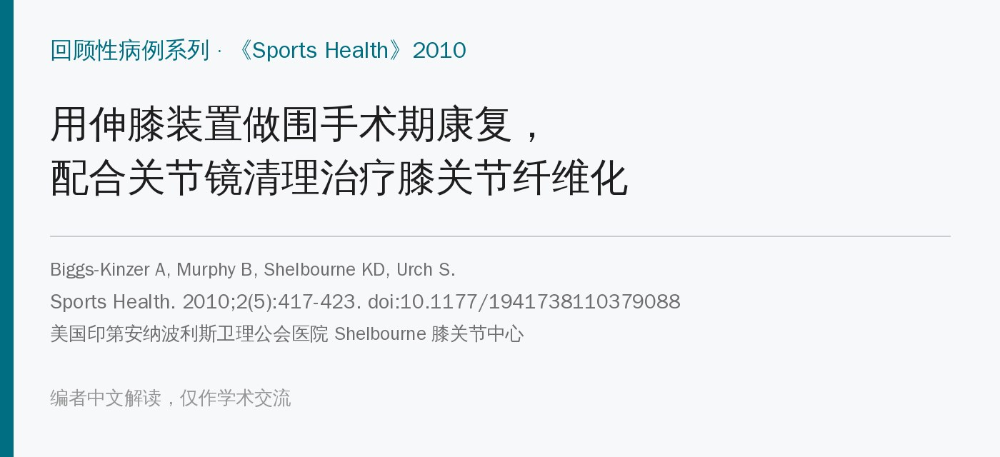
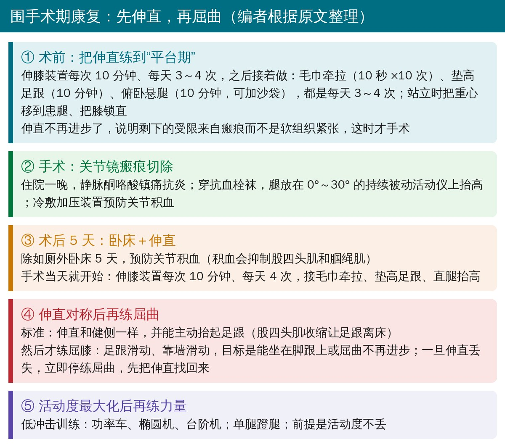
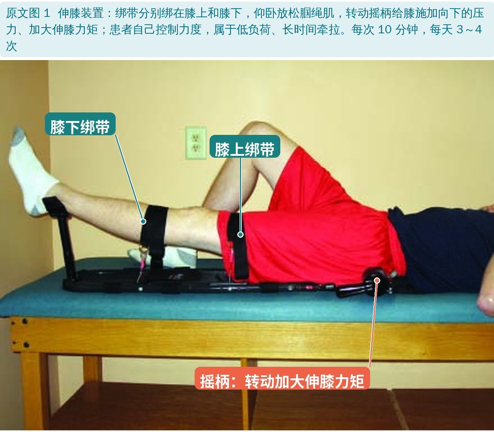
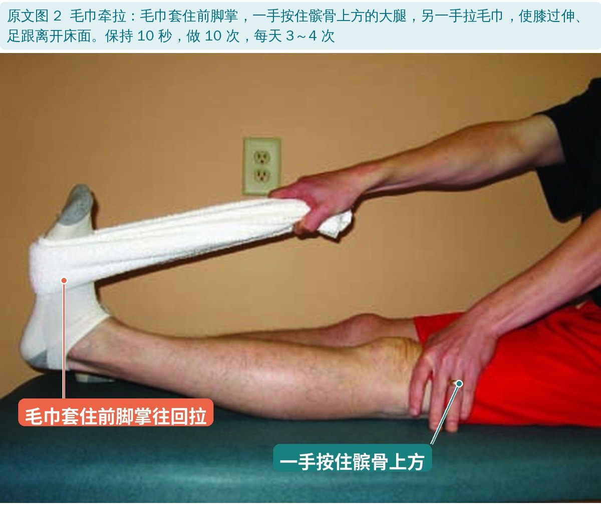
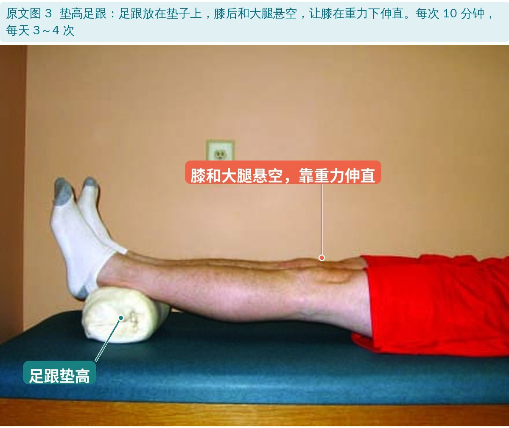
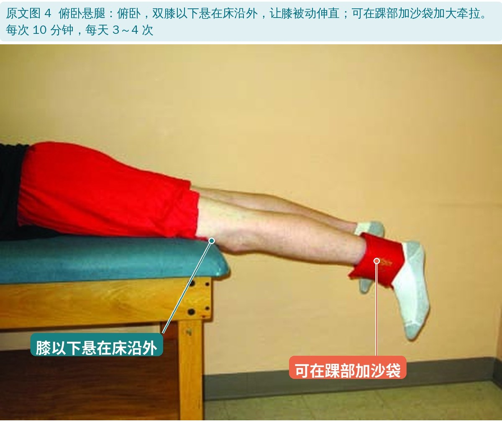
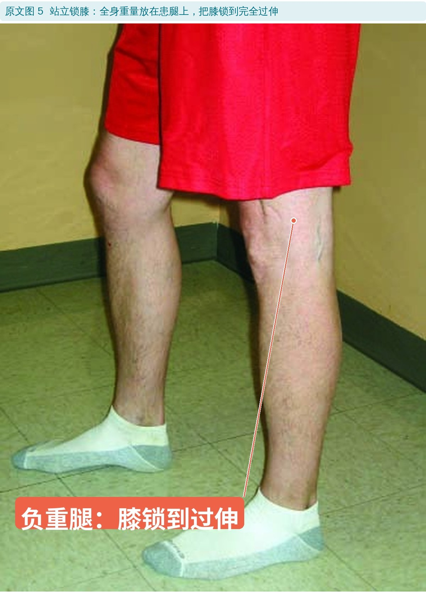
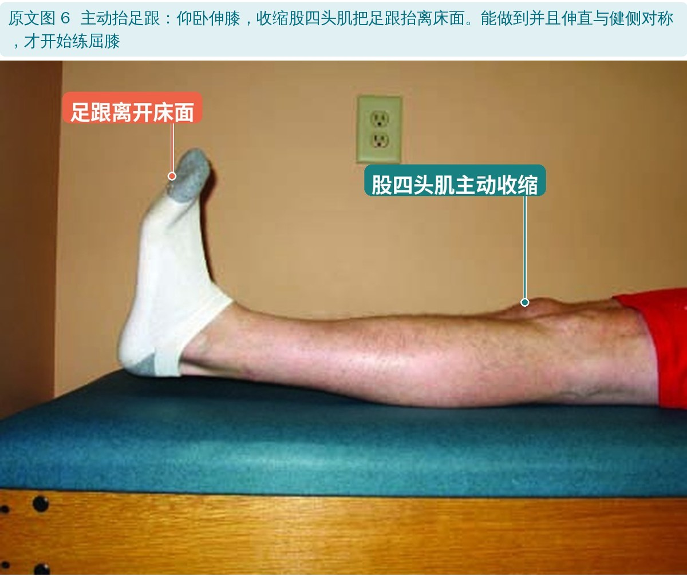
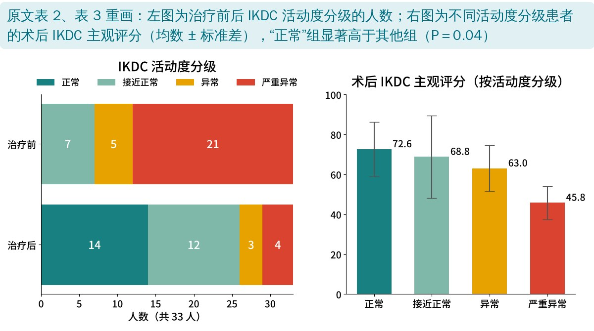

🔖原文信息（编者中文重排）
📚 文献信息
▪ Biggs-Kinzer A, Murphy B, Shelbourne KD, Urch S. Perioperative Rehabilitation Using a Knee Extension Device and Arthroscopic Debridement in the Treatment of Arthrofibrosis. Sports Health. 2010;2(5):417-423. doi:10.1177/1941738110379088
▪ 作者单位：美国印第安纳波利斯卫理公会医院 Shelbourne 膝关节中心
▪ 文章类型：回顾性病例系列（33 人，没有对照组）
▪ 利益冲突：作者之一 Shelbourne 是伸膝装置生产公司（Kneebourne Therapeutics）的顾问
关节纤维化是关节内外纤维组织异常增生，导致疼痛、活动度丢失、僵硬、无力、肿胀和功能受限，常见于前交叉韧带重建和全膝置换之后，发生率报告在 4%～35%。
治疗以手术为主（关节镜松解、手法松解、开放清理），康复方面的报道很少，多是系列石膏和伸直支具——这些方法费时费钱（每天治疗、反复打石膏），而且很少报告最终能否恢复到“正常”活动度和功能。
作者从 2003 年起在关节镜清理前后配合使用患者自己操作的伸膝装置，这篇回顾了效果。
• 对象：33 名在外院手术或保守治疗失败后来就诊的关节纤维化患者，女 19 人、男 14 人，平均 31 岁；27 人发生在前交叉韧带重建后，6 人在其他手术或并发症后
• 治疗：所有人都做术前康复 → 关节镜瘢痕切除 → 术后康复
• 测量：量角器测活动度，记为“过伸-伸直欠缺-屈曲”，并和健侧比较；IKDC 主观膝关节评分（另一项研究中前瞻收集）
• “正常”的标准（IKDC）：与健侧相比，伸直差 ≤2°、屈曲差 ≤5° 为正常；伸直差 3～5°、屈曲差 6～15° 为接近正常；6～10° / 16～25° 为异常；>10° / >25° 为严重异常

🔖围手术期康复流程（编者根据原文整理）
核心思路是先把伸直练到和健侧一样，再练屈曲——伸直和屈曲很难同时改善，而丢伸直比丢屈曲更难忍受。整个进阶按标准而不是按时间。

🔖原文图 1：伸膝装置（图中中文为编者所加）

🔖原文图 2：毛巾牵拉

🔖原文图 3：垫高足跟

🔖原文图 4：俯卧悬腿

🔖原文图 5：站立锁膝

🔖原文图 6：主动抬足跟
• 伸直与健侧对称，并且能主动收缩股四头肌把足跟抬离床面
• 屈膝练习：足跟滑动、靠墙滑动；目标是能坐在脚跟上，或屈曲不再进步
• 伸直一旦丢失，立即停止屈膝练习，先把伸直找回来
• 髌腱挛缩（低位髌骨）的患者，屈曲通常很难恢复到和健侧一样（本组 3 人）
• 什么时候手术：术前伸直练到不再进步，说明剩下的受限来自瘢痕而不是软组织紧张
• 术后卧床 5 天：除如厕外卧床，配合持续被动活动仪（0°～30°）和冷敷加压，预防关节积血——积血会抑制股四头肌和腘绳肌
• “正常”要和健侧比：大多数人膝有过伸（男性平均约 5°、女性约 6°，95% 以上的人有一定过伸）。健侧过伸 5°、患侧伸直差 2°，应记为相差 7°，而不是 2°
| 患侧 | 健侧 | |
|---|---|---|
| 术前（过伸-伸直欠缺-屈曲） | 0°-8°-117° | 5°-0°-147° |
| 术后平均 8.6 个月 | 3°-0°-134° | 5°-0°-147° |
原文结果：平均活动度（中文整理）
• 伸直：平均改善 11°（2°～28°）；33 人中 27 人伸直恢复到“正常”
• 屈曲：平均改善 17°（－5°～60°）；只有 14 人屈曲“正常”，出院时两侧屈曲平均差 13°（接近正常）——多数人最后卡在屈曲
• 总体活动度：治疗前没有一人“正常”、21 人“严重异常”；治疗后 14 人正常、12 人接近正常、3 人异常、4 人严重异常（其中 2 人有低位髌骨）
• 主观评分：IKDC 从 45.3 升到 67.1（术后平均 14.7 个月，P<0.01），33 人中 29 人提高；活动度“正常”者平均 72.6 分，显著高于其他人（P＝0.04）

🔖活动度分级和主观评分（编者根据原文表 2、表 3 重画）
• 没有对照：回顾性病例系列，无法区分效果来自伸膝装置、康复方案还是手术本身；也没有和石膏、支具等方法比较
• 利益冲突：作者之一 Shelbourne 是伸膝装置生产公司的顾问，而研究评价的正是这款装置
• “活动度越大评分越好”只做了一次比较：只比较了“正常”组和其他所有人（P＝0.04），没有对四个等级做趋势检验；而且活动度在 8.6 个月测、评分在 14.7 个月测，时间点不同
• 67 分仍不算好：作者自己也说不理想，提示预防关节纤维化比事后治疗更重要
• 卧床 5 天：现在看来比较保守，血栓风险和依从性需要权衡
• 没算成本：作者说伸膝装置能省钱省时，但研究没有评估费用
• 优点：强调和健侧对比、按标准进阶、先伸直后屈曲，这些原则在今天仍然适用
• “假设”和研究设计：摘要以“假设”形式提出结论，但这是回顾性病例分析，不是预先设计的检验
• 低位髌骨人数：方法写 33 人中 3 人有低位髌骨，讨论写术后 4 名“严重异常”中 2 人有低位髌骨，第 3 人的结果没有交代
• 结果时间点：活动度报告在术后平均 8.6 个月，主观评分在 14.7 个月，摘要把两者放在一起，容易误读为同一时间
• 参考文献 11：Hassan 等的研究标为《Am J Sports Med》2000;13(4)，卷号与该刊不符
• 小错：“0° to 30° degrees”；静脉用药“ketoralac”应为 ketorolac（酮咯酸）
• 先伸直、后屈曲：伸直和健侧对称、能主动抬足跟之后再练屈膝；伸直一丢就退回去
• 高频、低负荷、长时间：垫高足跟、俯卧悬腿、毛巾牵拉每天 3～4 次、每次 10 分钟——没有伸膝装置也能做
• 一定和健侧比：大多数人有 5° 左右过伸，“到 0°”并不等于正常
• 练到平台期再考虑手术：术前把软组织的部分尽量练回来，剩下的才是瘢痕
• 预防胜于治疗：前交叉韧带重建后早期就要把伸直拿到和健侧一样
欢迎关注骨科康复小黄公众号，获取更多物理治疗的专业知识！
📄参考文献：
Biggs-Kinzer A, Murphy B, Shelbourne KD, Urch S. Perioperative Rehabilitation Using a Knee Extension Device and Arthroscopic Debridement in the Treatment of Arthrofibrosis. Sports Health. 2010;2(5):417-423. doi:10.1177/1941738110379088
© 2010 The Author(s)，由 SAGE 出版，原文未标注开放获取许可。本文为学术交流用的中文解读：原文图 1～6 引自原文，图中中文标注为编者所加；流程卡和结果图为编者根据原文整理，表格为中文翻译。仅供学习交流，如有侵权请联系删除。